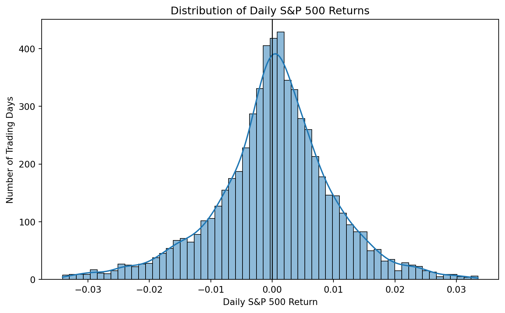
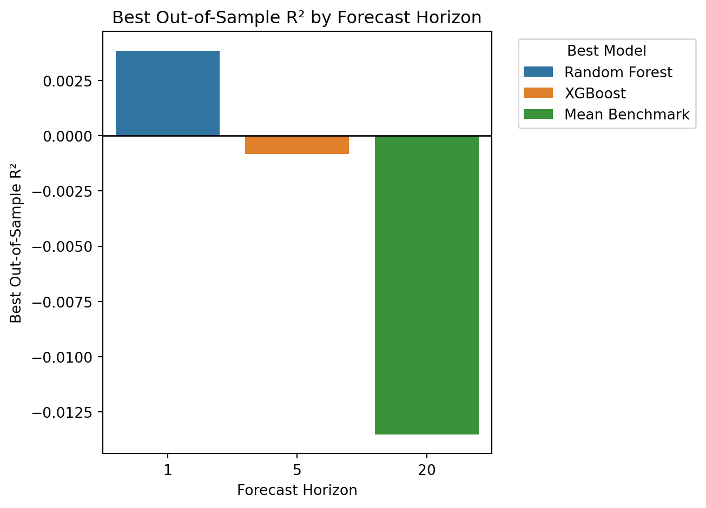
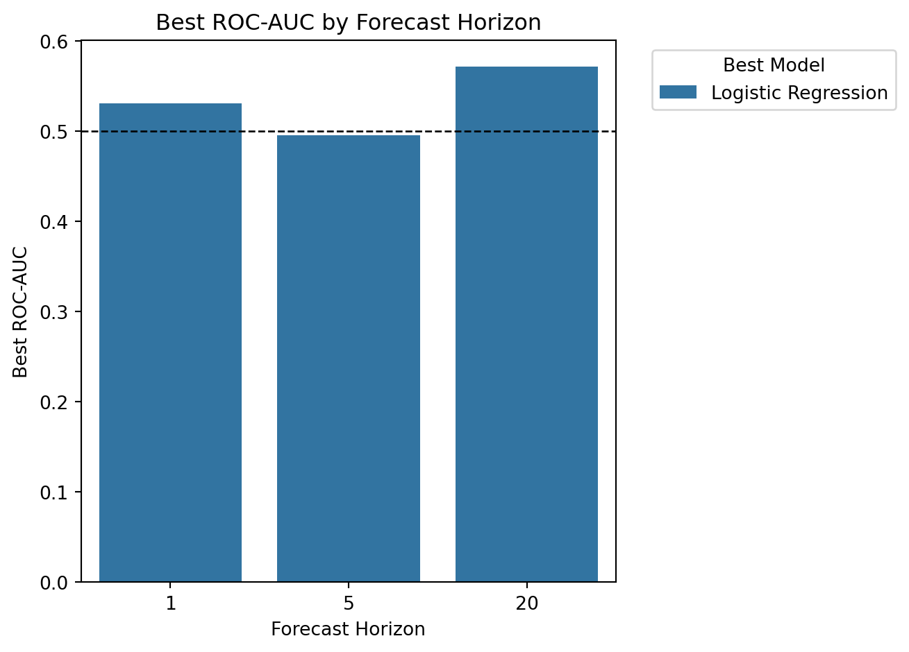
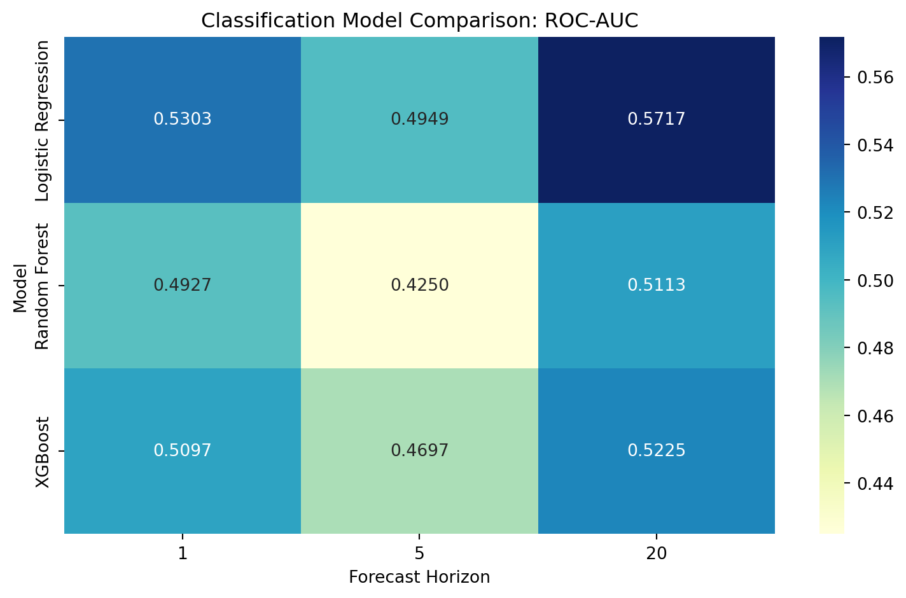
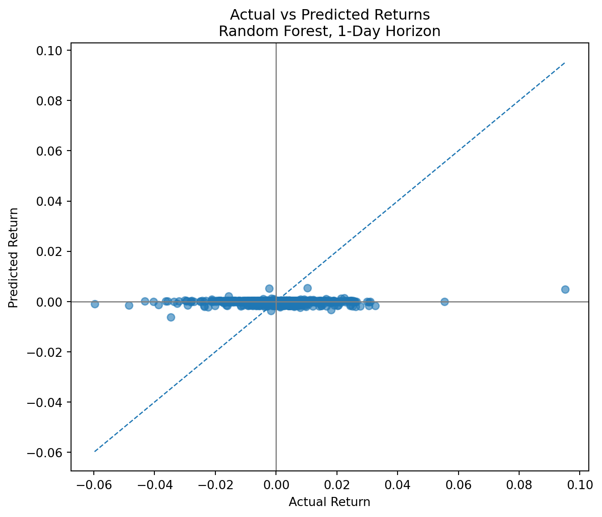
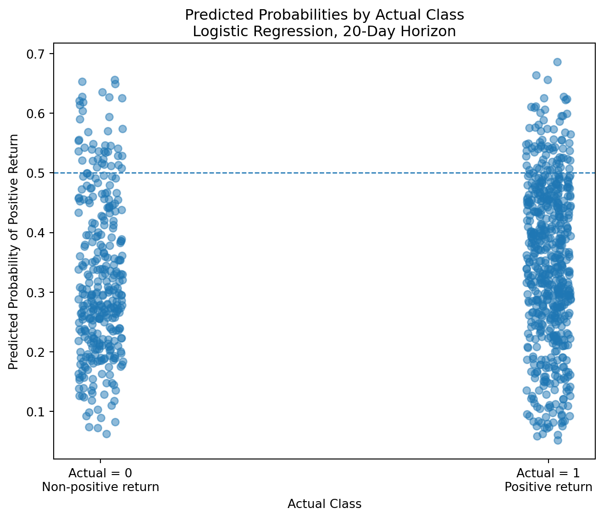
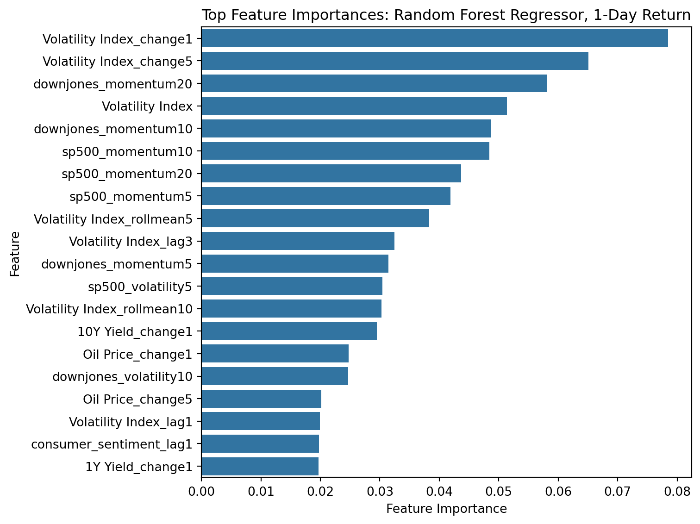
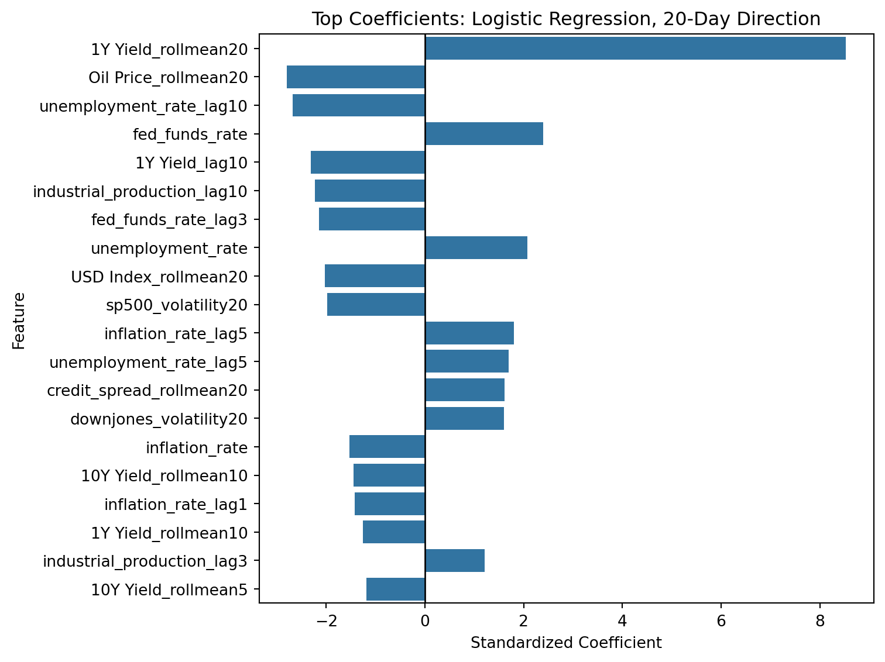

JSC370 Final Report
Introduction
Financial markets are shaped by a combination of macroeconomic conditions, investor expectations, and changing risk sentiment. Researchers, policymakers, and investors have long been interested in whether publicly observable economic and financial indicators contain useful information about future stock market performance. Variables such as interest rates, inflation, unemployment, credit spreads, commodity prices, and market volatility may reflect underlying economic strength or financial stress, and therefore may help explain movements in equity markets.
At the same time, predicting daily stock returns remains one of the most difficult tasks in empirical finance. Stock prices respond rapidly to new information, investor behavior, and unexpected shocks, which often makes short-horizon returns highly noisy and difficult to forecast. While some macro-financial indicators may exhibit statistical relationships with returns, it is less clear whether these relationships are strong enough to generate meaningful out-of-sample predictive performance.
This project investigates whether macro-financial indicators can be used to predict future daily returns of major U.S. stock indices. The analysis focuses on the S&P 500, a broad benchmark of the U.S. equity market, and uses a historical dataset combining market-based indicators from Yahoo Finance and macroeconomic variables from the Federal Reserve Economic Data (FRED) API. The dataset spans multiple economic regimes, including expansions, recessions, financial crises, and periods of elevated inflation and monetary tightening.
The central research question is:
Can macro-financial indicators meaningfully predict next-day stock market returns, and do machine learning methods improve predictive accuracy relative to traditional linear models?
This question extends the earlier midterm analysis, which found that some lagged variables—particularly market volatility, Treasury yields, and credit spreads—had statistically significant but economically small relationships with next-day returns. Those findings suggest that predictive signals may exist, but simple linear models explain only a very small share of daily return variation. This raises the possibility that the relevant relationships may be nonlinear, state-dependent, or only detectable when many variables are combined using more flexible methods.
To address this question, the final project will compare multiple predictive approaches. First, benchmark models such as historical-average forecasts and ordinary least squares regression will be estimated. Second, regularized linear models such as Ridge and Lasso regression will be used to improve feature selection and reduce overfitting. Third, machine learning models such as Random Forest and XGBoost will be used to capture nonlinear interactions and threshold effects. In addition to predicting the numerical value of next-day returns, a secondary analysis will classify whether the market increases or decreases on the following day.
The contribution of this project is therefore twofold. Substantively, it evaluates whether commonly observed macro-financial indicators contain useful short-term predictive information for equity markets. Methodologically, it compares classical statistical models with modern machine learning approaches using a time-series forecasting framework. The results will help determine whether daily stock returns can be meaningfully forecast using publicly available macro-financial data, or whether such returns remain largely unpredictable even with more advanced predictive models.
Method
Data Acquisition
The dataset was constructed from two public data sources: Yahoo Finance and Federal Reserve Economic Data (FRED). Daily financial market data were collected from the Yahoo Finance chart API using a custom Python request function. For each ticker symbol, the function sent a request to the Yahoo Finance chart endpoint with a start timestamp, end timestamp, daily interval, and adjusted-close option. The JSON response contained timestamped quote data, including open, high, low, close, adjusted close, and volume. After converting the Unix timestamps into calendar dates, the analysis retained the daily closing-price series for each financial indicator.
The Yahoo Finance series included the S&P 500 Index, Dow Jones Industrial Average, 10-year U.S. Treasury yield, 1-year U.S. Treasury yield, U.S. Dollar Index, CBOE Volatility Index (VIX), and crude oil futures. These variables were selected to capture equity market performance, interest-rate conditions, currency strength, market uncertainty, and commodity price movements.
Macroeconomic data were collected from the FRED API using a custom function that requested observations for each FRED series ID. The JSON output from FRED was converted into a pandas data frame with two main columns: date and value. The FRED series included the Federal Funds Rate, Consumer Price Index (CPI), unemployment rate, industrial production index, University of Michigan Consumer Sentiment Index, Moody’s BAA corporate bond yield, and the 10-year Treasury yield. In addition, a credit spread variable was constructed as the difference between Moody’s BAA corporate bond yield and the 10-year Treasury yield, representing perceived credit risk and financial stress.
The final merged dataset combines daily financial indicators with lower-frequency macroeconomic variables and spans multiple decades of U.S. economic history, including expansions, recessions, financial crises, inflationary periods, and monetary tightening cycles.
Data Cleaning and Wrangling
Raw market data from Yahoo Finance were converted into structured pandas data frames with standardized date columns and closing-price variables. Only the relevant closing-price series were retained for analysis. All dates were converted to Python datetime format to ensure consistency across sources.
Macroeconomic series from FRED are reported at monthly or lower frequencies, while market data are observed daily. To align these sources, lower-frequency macroeconomic variables were resampled to daily frequency using forward-fill interpolation, allowing the most recently available macroeconomic observation to remain in effect until a new release date.
After the individual series were cleaned and renamed, all variables were merged by date using the date index. The merged dataset was then restricted to rows where all selected variables were available. Remaining missing values were removed after the merge and again after feature engineering, because lagged variables, rolling means, rolling volatility, and future return targets naturally create missing observations at the beginning and end of the sample. This process ensured that all models were trained on complete observations with the same predictor set.
Daily stock returns were computed using percentage changes in index closing prices. The primary dependent variable is the next-period S&P 500 return, while secondary targets include Dow Jones returns and binary direction indicators equal to one when the future return is positive and zero otherwise.
To avoid look-ahead bias, predictor variables were lagged so that only information available at time \(t\) is used to predict returns at time \(t+1\), \(t+5\), or \(t+20\).
Feature Engineering
To improve predictive performance beyond the original midterm specification, the final project extends the dataset through feature engineering. In addition to one-day lagged predictors, the following features were constructed:
- Multiple lag variables (1-day, 3-day, 5-day, and 10-day lags)
- Rolling means over 5, 10, and 20 trading days
- Rolling volatility measures of recent stock returns
- Momentum features based on cumulative past returns
- First differences and short-run changes in yields, oil prices, volatility, and spreads
- Yield-curve spread variables (10-year minus 1-year Treasury yield)
These engineered variables are intended to capture delayed reactions, short-term trends, volatility regimes, and changing macro-financial conditions.
Exploratory Data Analysis
Initial data exploration was conducted using pandas, matplotlib, seaborn, and plotnine (ggplot for Python). Publication-quality figures were created to summarize historical patterns and motivate the predictive modeling stage.
Exploratory visualizations included:
- Time-series plots of major stock indices
- Time-series plots of the VIX and other financial indicators
- Histograms of daily stock returns
- Scatterplots of returns against macro-financial predictors
- Correlation heatmaps across all variables
- Tables summarizing periods of elevated volatility
These analyses were used to assess distributional shape, outliers, temporal trends, and potential predictor relationships.
Here is a sample of the data distribution of finalized daily S&P 500 returns:
Statistical Tests and Baseline Analysis
Several classical statistical methods were used in the midterm stage and retained as baseline evidence for the final project.
First, ordinary least squares (OLS) regression was used to estimate the linear relationship between lagged macro-financial indicators and next-day S&P 500 returns.
Second, two-sample t-tests were used to compare mean stock returns during high-volatility periods (e.g., VIX > 40) versus normal market conditions.
Third, Pearson correlation analysis was used to examine pairwise linear relationships between lagged predictors and future returns.
These methods provide interpretable benchmarks and help assess whether any predictive signal exists prior to more flexible machine learning models.
Predictive Modeling
The primary objective of the final project is forecasting future stock returns using supervised learning methods. Two prediction tasks are considered:
- Regression: predict numerical future returns
- Classification: predict whether future returns are positive or negative
Models are estimated for three forecasting horizons:
- 1 trading day ahead
- 5 trading days ahead
- 20 trading days ahead
Tier 1: Benchmark Models
- Historical mean return forecast
- Majority-class classifier
- Ordinary Least Squares (OLS)
Tier 2: Regularized Linear Models
- Ridge Regression
- Lasso Regression
- Logistic Regression
Tier 3: Machine Learning Models
- Random Forest
- XGBoost (if computationally feasible)
These models were selected to compare traditional linear approaches with nonlinear tree-based methods capable of capturing interactions and threshold effects.
Hyperparameter Tuning
For models with tunable hyperparameters, optimization is performed using Optuna. Separate objective functions are defined for each model type.
- For regression models, validation-set RMSE is minimized.
- For classification models, validation-set ROC-AUC is maximized.
Optuna searches across predefined parameter ranges using parallel trials. After tuning, the best model specification is refit on the combined training and validation data.
Training, Validation, and Testing Procedure
Because the dataset is time-series data, observations were not randomly shuffled. Random splitting would introduce look-ahead bias by allowing future information to enter the training set.
Instead, the sample was divided chronologically:
- Training set (70%): used to estimate models
- Validation set (15%): used for hyperparameter tuning and model selection
- Test set (15%): reserved for final out-of-sample evaluation
This framework more accurately reflects real forecasting conditions, where only past information is available when making predictions.
Evaluation Metrics
For regression models, forecasting performance is evaluated using:
- Root Mean Squared Error (RMSE)
- Mean Absolute Error (MAE)
- Out-of-sample \(R^2\)
For classification models, predictive performance is evaluated using:
- Accuracy
- Precision / Recall (if relevant)
- Receiver Operating Characteristic Area Under Curve (ROC-AUC)
These metrics allow comparison across models and forecast horizons.
Training, Validation, and Testing Procedure
Because the data are time-series observations, the dataset should not be split randomly. Random shuffling would mix future observations into the training set and create look-ahead bias, leading to overly optimistic model performance. Instead, the data should be split chronologically so that models are always trained on past information and evaluated on future periods.
The engineered dataset model_df is therefore divided into training, validation, and test sets based on time order:
- Training set: used to estimate model parameters
- Validation set: used for model tuning and model selection
- Test set: held out until the end for final out-of-sample evaluation
This setup more closely reflects the real forecasting problem faced by investors, where only historical information is available when making predictions.
| Split | Rows | Features | Start Date | End Date | Share of Sample | |
|---|---|---|---|---|---|---|
| 0 | Training | 4391 | 99 | 2000-09-21 | 2018-04-05 | 70.0% |
| 1 | Validation | 941 | 99 | 2018-04-06 | 2021-12-29 | 15.0% |
| 2 | Test | 941 | 99 | 2021-12-30 | 2025-09-30 | 15.0% |
Results
This section presents the final out-of-sample results for both prediction tasks: forecasting the numerical value of future S&P 500 returns and classifying whether future returns are positive or negative. The models are evaluated across 1-day, 5-day, and 20-day horizons. Regression performance is assessed using RMSE, MAE, and out-of-sample R², while classification performance is assessed using accuracy and ROC-AUC.
Model Performance Tables
| Horizon | Model | RMSE | MAE | R2 | |
|---|---|---|---|---|---|
| 0 | 1 | Random Forest | 0.01140 | 0.00809 | 0.00384 |
| 1 | 1 | XGBoost | 0.01142 | 0.00806 | -0.00013 |
| 2 | 1 | Lasso | 0.01142 | 0.00806 | -0.00017 |
| 3 | 1 | Mean Benchmark | 0.01142 | 0.00807 | -0.00045 |
| 4 | 1 | Ridge | 0.01201 | 0.00896 | -0.10666 |
| 5 | 1 | OLS | 0.01268 | 0.00968 | -0.23263 |
| 6 | 5 | XGBoost | 0.02427 | 0.01813 | -0.00083 |
| 7 | 5 | Lasso | 0.02427 | 0.01813 | -0.00091 |
| 8 | 5 | Mean Benchmark | 0.02429 | 0.01818 | -0.00234 |
| 9 | 5 | Random Forest | 0.02640 | 0.02054 | -0.18411 |
| 10 | 5 | Ridge | 0.02782 | 0.02279 | -0.31479 |
| 11 | 5 | OLS | 0.03058 | 0.02504 | -0.58911 |
| 12 | 20 | Mean Benchmark | 0.04529 | 0.03717 | -0.01352 |
| 13 | 20 | Lasso | 0.04729 | 0.03987 | -0.10492 |
| 14 | 20 | Random Forest | 0.05399 | 0.04536 | -0.44017 |
| 15 | 20 | OLS | 0.06656 | 0.05484 | -1.18889 |
| 16 | 20 | Ridge | 0.06810 | 0.05933 | -1.29135 |
| 17 | 20 | XGBoost | 0.07015 | 0.06053 | -1.43134 |
Table 2. Regression Performance Summary
Table 2 shows that the regression models had weak out-of-sample performance across all three forecast horizons. At the 1-day horizon, Random Forest performed best, with an RMSE of 0.01140 and a small positive \(R^2\) of 0.00384. This means it slightly improved over the mean benchmark, whose \(R^2\) was -0.00045, but the improvement was extremely small. XGBoost and Lasso were very close to the mean benchmark, with \(R^2\) values of -0.00013 and -0.00017, respectively. At the 5-day horizon, XGBoost performed best with an \(R^2\) of -0.00083, followed closely by Lasso at -0.00091. These values are still slightly negative, showing almost no meaningful predictive gain over the benchmark. At the 20-day horizon, the mean benchmark performed best, with an \(R^2\) of -0.01352, while all fitted models performed worse. XGBoost performed especially poorly at this horizon, with an \(R^2\) of -1.43134. Overall, the results suggest that the engineered macro-financial indicators provide very limited ability to predict the exact size of future S&P 500 returns. The only positive \(R^2\) appears for the 1-day Random Forest model, but the value is so close to zero that it should be interpreted as a very weak improvement rather than strong predictive power. In relation to the research question, this table suggests that machine learning models provide little improvement for predicting exact return size, even when many macro-financial predictors are included.
| Horizon | Model | Accuracy | ROC_AUC | |
|---|---|---|---|---|
| 0 | 1 | Logistic Regression | 0.54304 | 0.53035 |
| 1 | 1 | XGBoost | 0.53241 | 0.50967 |
| 2 | 1 | Random Forest | 0.48778 | 0.49275 |
| 3 | 1 | Majority Class Benchmark | 0.52604 | Not applicable |
| 4 | 5 | Logistic Regression | 0.46546 | 0.49491 |
| 5 | 5 | XGBoost | 0.50372 | 0.4697 |
| 6 | 5 | Random Forest | 0.41339 | 0.42498 |
| 7 | 5 | Majority Class Benchmark | 0.58342 | Not applicable |
| 8 | 20 | Logistic Regression | 0.39320 | 0.57166 |
| 9 | 20 | XGBoost | 0.47078 | 0.5225 |
| 10 | 20 | Random Forest | 0.62380 | 0.5113 |
| 11 | 20 | Majority Class Benchmark | 0.64081 | Not applicable |
Table 3. Classification Performance Summary
Table 3 shows that the classification models had modest performance overall, with the strongest results coming from Logistic Regression. At the 1-day horizon, Logistic Regression performed best, with an accuracy of 0.54304 and a ROC-AUC of 0.53035. This is slightly better than random classification, but the improvement is small. XGBoost also had a reasonable 1-day accuracy of 0.53241, but its ROC-AUC was only 0.50967, suggesting weak ranking ability between positive and non-positive return days.
At the 5-day horizon, classification performance was weaker. Logistic Regression had the highest ROC-AUC among the fitted models, but its value was 0.49491, which is slightly below the random benchmark of 0.50. XGBoost and Random Forest also performed below 0.50, with ROC-AUC values of 0.46970 and 0.42498. The majority-class benchmark had the highest accuracy at 0.58342, but this does not necessarily mean it was a better predictive model. It mainly reflects the fact that one class was more common in the 5-day test set.
At the 20-day horizon, Logistic Regression again performed best by ROC-AUC, reaching 0.57166. This is the strongest classification result in the table and suggests some ability to distinguish positive from non-positive 20-day returns. However, its accuracy was only 0.39320, while the majority-class benchmark had an accuracy of 0.64081. This shows why ROC-AUC is more useful than accuracy here: accuracy is strongly affected by class imbalance, while ROC-AUC evaluates the model’s ranking ability across different thresholds. The classification results suggest that directional prediction is still weak, but the 20-day Logistic Regression model shows the clearest predictive signal.
Moreover, these results suggest that direction classification is somewhat more promising than return-size prediction, but the improvement over random classification is still modest.
| Horizon | Model | RMSE | MAE | R2 | |
|---|---|---|---|---|---|
| 0 | 1 | Random Forest | 0.01140 | 0.00809 | 0.00384 |
| 1 | 5 | XGBoost | 0.02427 | 0.01813 | -0.00083 |
| 2 | 20 | Mean Benchmark | 0.04529 | 0.03717 | -0.01352 |
Table 4. Best Regression Model by Forecast Horizon
| Horizon | Model | Accuracy | ROC_AUC | |
|---|---|---|---|---|
| 0 | 1 | Logistic Regression | 0.54304 | 0.53035 |
| 1 | 5 | Logistic Regression | 0.46546 | 0.49491 |
| 2 | 20 | Logistic Regression | 0.39320 | 0.57166 |
Table 5. Best Classification Model by Forecast Horizon
Tables 4 and 5 summarize the best-performing model at each forecast horizon. For regression, the best model changes across horizons. Random Forest performs best for the 1-day horizon, with an RMSE of 0.01140 and a small positive \(R^2\) of 0.00384. XGBoost performs best for the 5-day horizon, with an RMSE of 0.02427 and an \(R^2\) of -0.00083. At the 20-day horizon, the mean benchmark performs best, with an RMSE of 0.04529 and an \(R^2\) of -0.01352. This pattern shows that no single regression model consistently dominates across all horizons. More importantly, even the best regression results are very close to zero or negative, meaning that the models provide little meaningful improvement for predicting exact return size.
For classification, Logistic Regression is the best model across all three horizons based on ROC-AUC. Its ROC-AUC is 0.53035 at the 1-day horizon, 0.49491 at the 5-day horizon, and 0.57166 at the 20-day horizon. The 5-day value is slightly below 0.50, indicating that even the best model at this horizon performs no better than random classification. The strongest result appears at the 20-day horizon, where Logistic Regression reaches a ROC-AUC of 0.57166. Overall, these tables show that model performance depends on both the prediction task and forecast horizon. The clearest predictive signal appears in 20-day direction classification, while exact return prediction remains weak.
Hyperparameter Tuning Results
| Horizon | Model | model__alpha | |
|---|---|---|---|
| 0 | 1 | Ridge | 99.876134 |
| 1 | 5 | Ridge | 99.316107 |
| 2 | 20 | Ridge | 89.647638 |
Table 6. Ridge Regression Hyperparameters
| Horizon | Model | n_estimators | max_depth | min_samples_split | min_samples_leaf | max_features | |
|---|---|---|---|---|---|---|---|
| 0 | 1 | Regressor | 282 | 2 | 28 | 6 | sqrt |
| 1 | 5 | Regressor | 348 | 7 | 30 | 13 | log2 |
| 2 | 20 | Regressor | 249 | 11 | 30 | 20 | sqrt |
| 3 | 1 | Classifier | 223 | 13 | 14 | 17 | None |
| 4 | 5 | Classifier | 106 | 20 | 3 | 1 | log2 |
| 5 | 20 | Classifier | 220 | 10 | 10 | 23 | None |
Table 7. Random Forest Hyperparameters
| Horizon | Model | n_estimators | learning_rate | max_depth | subsample | min_child_weight | colsample_bytree | gamma | reg_alpha | reg_lambda | |
|---|---|---|---|---|---|---|---|---|---|---|---|
| 0 | 1 | Regressor | 488 | 0.027396 | 2 | 0.696484 | 5 | 0.760250 | 1.850185 | 1.823289e-05 | 1.756291e-02 |
| 1 | 5 | Regressor | 705 | 0.008817 | 4 | 0.601607 | 10 | 0.692863 | 1.912055 | 2.809608e-07 | 6.117732e+00 |
| 2 | 20 | Regressor | 508 | 0.031536 | 7 | 0.613357 | 4 | 0.790799 | 0.005721 | 1.408670e-05 | 1.162668e-08 |
| 3 | 1 | Classifier | 190 | 0.017509 | 2 | 0.708225 | 9 | 0.709354 | 3.021249 | 1.540688e-05 | 1.775945e-08 |
| 4 | 5 | Classifier | 362 | 0.036475 | 8 | 0.854827 | 8 | 0.878968 | 3.667678 | 9.757897e-04 | 2.319192e+00 |
| 5 | 20 | Classifier | 246 | 0.046395 | 7 | 0.994734 | 1 | 0.739170 | 4.706242 | 5.282959e-06 | 7.411897e-06 |
Table 8. XGBoost Hyperparameters
Tables 6 through 8 report the tuned hyperparameters selected through Optuna for the regularized and tree-based models. For Ridge regression, the selected alpha values are large across all horizons, ranging from 89.64764 to 99.87613. This suggests that the model preferred stronger regularization, likely because the engineered predictor set contains many related variables and could otherwise overfit the training data. For Random Forest, the selected settings vary across regression and classification tasks. For example, the number of trees ranges from 106 to 348, and maximum depth ranges from 2 to 20, showing that different horizons required different levels of model complexity. For XGBoost, the tuned number of estimators ranges from 190 to 705, with learning rates between 0.00882 and 0.04640. These differences show that the models were not trained using one fixed setting, but were separately optimized for each task and forecast horizon using the validation set.
Statistical Comparison Across Horizons
| Test | Outcome compared | Test statistic | p-value | Significant at 5% | |
|---|---|---|---|---|---|
| 0 | Friedman test | Regression R2 across horizons | 12.0 | 0.00248 | True |
Table 9. Friedman Test for Regression Performance Across Horizons
| Test | Outcome compared | Test statistic | p-value | Significant at 5% | |
|---|---|---|---|---|---|
| 0 | Friedman test | Classification ROC-AUC across horizons | 6.0 | 0.04979 | True |
Table 10. Friedman Test for Classification Performance Across Horizons
Tables 9 and 10 test whether model performance differs systematically across the 1-day, 5-day, and 20-day forecast horizons. For regression performance, the Friedman test is statistically significant, with a test statistic of 12.00 and a p-value of 0.00248. This means there is evidence that regression performance changes across forecast horizons. This matches the earlier model results, where performance was relatively less weak at the 1-day horizon but became worse at longer horizons, especially for several fitted models at the 20-day horizon.
For classification performance, the Friedman test is also statistically significant, with a test statistic of 6.00 and a p-value of 0.04979. This suggests that ROC-AUC performance also differs across horizons at the 5% level, although the result is very close to the cutoff. The classification tables show that the 20-day horizon has the strongest ROC-AUC result, especially for Logistic Regression, while the 5-day horizon performs weakest. These tests therefore support the idea that forecast horizon matters for both regression and classification, but the classification result should be interpreted cautiously because the p-value is only slightly below 0.05.
Regression Performance
Best Out-of-Sample R² by Horizon

Figure 1. Best Out-of-Sample \(R^2\) by Forecast Horizon
Figure 1 shows the best out-of-sample \(R^2\) value at each forecast horizon. At the 1-day horizon, Random Forest performs best, with a small positive \(R^2\) of 0.00384. This means it slightly improves over the mean benchmark, but the improvement is very small. At the 5-day horizon, XGBoost performs best, but its \(R^2\) is still slightly negative at -0.00083, indicating almost no meaningful predictive gain. At the 20-day horizon, the mean benchmark is the best-performing approach, with an \(R^2\) of -0.01352. Overall, the figure shows that exact return prediction is weakest at longer horizons and that even the best regression results are close to zero or negative. The only positive result is the 1-day Random Forest model, but its value is too small to suggest strong predictive power. This means that the predictive modeling framework does not produce strong evidence of numerical return predictability. ## Classification Performance
Best ROC-AUC by Horizon

Figure 2. Best ROC-AUC by Forecast Horizon
Figure 2 shows that Logistic Regression achieved the highest ROC-AUC across the forecast horizons, but the results remain close to the random-classification benchmark of \(\text{ROC-AUC} = 0.50\). The best performance occurs at the 20-day horizon, with \(\text{ROC-AUC} \approx 0.57\), while the 1-day horizon reaches about \(\text{ROC-AUC} \approx 0.53\) and the 5-day horizon is almost exactly \(\text{ROC-AUC} \approx 0.50\). This suggests that the model has weak predictive ability overall, although it performs slightly better when predicting longer-term market direction. This suggests that the macro-financial variables are more useful for ranking future market direction than for predicting exact return values, especially at the 20-day horizon.
Regression Model Comparison Heatmap

Figure 3. Regression Model Comparison Heatmap: Out-of-Sample \(R^2\)
Figure 3 compares the out-of-sample \(R^2\) values across different regression models and forecast horizons. Overall, the results suggest that the regression models have weak explanatory power for future market returns, since the out-of-sample \(R^2\) values are close to zero or negative in most cases. A negative out-of-sample \(R^2\) means that the model performs worse than a simple benchmark prediction, such as using the historical average return. Although some model and horizon combinations perform slightly better than others, the differences appear small. This suggests that predicting the exact size of future returns is difficult, even when using multiple market and macroeconomic indicators.
Classification Model Comparison Heatmap

Figure 4. Classification Model Comparison Heatmap: ROC-AUC
Figure 4 compares the ROC-AUC performance of the classification models across the 1-day, 5-day, and 20-day forecast horizons. Overall, Logistic Regression performs the best among the three models, especially at the 20-day horizon, where it reaches the highest ROC-AUC value of \(\text{ROC-AUC} = 0.5717\). At the 1-day horizon, Logistic Regression also performs the best with \(\text{ROC-AUC} = 0.5303\), compared with XGBoost at \(\text{ROC-AUC} = 0.5097\) and Random Forest at \(\text{ROC-AUC} = 0.4927\). However, all models perform poorly at the 5-day horizon, with ROC-AUC values below \(0.50\) or very close to it. This means that the models have little ability to distinguish between positive and negative market movements at that horizon. Overall, the classification results suggest that predicting market direction is difficult, but Logistic Regression provides the most consistent performance, especially for the longer 20-day forecast horizon.
Prediction Diagnostics
Actual vs Predicted Returns

Figure 5. Actual vs Predicted Returns for the Best Overall Regression Model

Figure 6. Predicted Probabilities by Actual Class for the Best Overall Classification Model
Figure 5 shows the actual versus predicted returns for the best overall regression model, which is Random Forest at the 1-day forecast horizon. The dashed diagonal line represents perfect prediction, where the predicted return would equal the actual return. However, most predicted returns are clustered very close to \(0\), even when actual returns range from about \(-0.06\) to \(0.095\). This means that the model is not capturing the full size of market movements. Instead, it tends to predict returns near the average, which makes it less useful for forecasting large positive or negative changes. Overall, this supports the earlier out-of-sample \(R^2\) results, suggesting that the regression model has limited predictive power for the magnitude of future returns.
Figure 6 shows the predicted probabilities from the best overall classification model, which is Logistic Regression at the 20-day forecast horizon. The dashed horizontal line at \(0.50\) represents the usual cutoff for classifying a return as positive. Ideally, observations with actual positive returns should have predicted probabilities mostly above \(0.50\), while observations with actual non-positive returns should have probabilities mostly below \(0.50\). However, the two groups overlap heavily. Many actual positive-return cases still receive probabilities below \(0.50\), and some non-positive-return cases receive probabilities above \(0.50\). This shows that the model has some ability to rank positive and non-positive outcomes, but the separation between the two classes is weak. This is consistent with the ROC-AUC value of about \(0.57\), which is better than random guessing but still limited.
ROC Curve for Best Classifier

Figure 7. ROC Curve (Logistic Regression, 20-Day Direction)
Figure 7 shows the ROC curve for the best overall classification model, Logistic Regression at the 20-day forecast horizon. The model has an AUC of approximately 0.572, which is above the random-classifier benchmark of 0.50. This means the model has some ability to rank positive 20-day return cases above non-positive return cases. However, the curve remains fairly close to the diagonal line, so the improvement is modest rather than strong. This figure supports the classification results in Table 3: the clearest directional signal appears at the 20-day horizon, but the model’s predictive power is still limited.
Feature Importance and Model Interpretation

Figure 8. Random Forest Regressor Feature Importance for 1-Day Return Prediction
Figure 8 shows the most important predictors used by the Random Forest model for 1-day S&P 500 return prediction. The top predictors are mainly volatility and momentum variables. The most important feature is the 1-day change in the VIX, followed by the 5-day change in the VIX, 20-day Dow Jones momentum, the VIX level itself, and shorter-term S&P 500 and Dow Jones momentum measures. This suggests that the Random Forest model relied more on recent market sentiment, volatility changes, and price momentum than on slower-moving macroeconomic indicators. For example, variables such as unemployment, inflation, and industrial production do not appear among the top features, while VIX-related and momentum variables dominate the ranking. However, these importance values should be interpreted as model-based associations rather than causal effects. They show which variables the model used most for prediction, not which variables directly caused future returns.

Figure 9. Logistic Regression Coefficients for 20-Day Direction Prediction
Figure 9 shows the largest standardized coefficients from the Logistic Regression model for 20-day direction prediction. The strongest positive coefficient is the 20-day rolling average of the 1-year Treasury yield, which is much larger than the other coefficients. This means that, within this fitted model, higher recent short-term yield levels are associated with a higher predicted probability of a positive 20-day S&P 500 return. Other positive coefficients include the federal funds rate, the unemployment rate, lagged inflation, lagged unemployment, 20-day Dow Jones volatility, and the 20-day rolling credit spread. Negative coefficients include the 20-day rolling oil price, lagged unemployment, lagged industrial production, lagged federal funds rate, the 20-day rolling USD Index, 20-day S&P 500 volatility, and several rolling yield measures.
Overall, this figure suggests that the 20-day direction model relies more on broader macro-financial conditions than the 1-day Random Forest return model. Unlike Figure 8, where volatility and momentum variables dominate, Figure 9 includes more interest-rate, oil-price, unemployment, inflation, industrial-production, and credit-spread variables. However, these coefficients should be interpreted as model-based associations rather than causal effects. They show how the Logistic Regression model used standardized predictors to classify future market direction, not whether these variables directly caused future returns.
This helps answer the research question by showing that the limited predictive signal comes mainly from volatility, momentum, and interest-rate-related variables rather than from all macroeconomic indicators equally.
Although XGBoost was included in the model comparison, its feature-importance plot was not retained because the fitted model did not produce a readable nonzero importance ranking for the selected 1-day return model. To avoid presenting a misleading blank figure, the interpretation focuses on Random Forest feature importance and Logistic Regression coefficients, which provide clearer information about the predictors used by the models.
Conclusions and Summary
This project examined whether macro-financial indicators can meaningfully predict future S&P 500 returns, and whether machine learning models improve predictive performance relative to simpler benchmark and linear models. Overall, the results provide a mixed answer. The indicators show little ability to predict the exact size of future returns, but they provide limited usefulness for classifying medium-term market direction.
For numerical return prediction, model performance was generally weak. Across the 1-day, 5-day, and 20-day horizons, most out-of-sample \(R^2\) values were close to zero or negative. The strongest regression result was the 1-day Random Forest model, with a small positive \(R^2\) of 0.00384. However, this improvement was extremely small and should not be interpreted as strong predictive power. At the 5-day horizon, XGBoost performed best, but its \(R^2\) was still slightly negative at -0.00083. At the 20-day horizon, the mean benchmark performed best, with an \(R^2\) of -0.01352, while all fitted regression models performed worse. These results suggest that the engineered predictors, including lagged indicators, rolling averages, momentum, volatility, and yield-spread features, do not meaningfully predict the numerical size of future S&P 500 returns.
The classification results were somewhat stronger, but still modest. Logistic Regression was the best classification model across all three horizons based on ROC-AUC. At the 1-day horizon, it achieved a ROC-AUC of 0.53035, which is only slightly above the random benchmark of 0.50. At the 5-day horizon, the best ROC-AUC was 0.49491, suggesting no useful directional signal. The strongest classification result appeared at the 20-day horizon, where Logistic Regression reached a ROC-AUC of 0.57166. This suggests that macro-financial indicators may contain more useful information for predicting medium-term market direction than for predicting exact return size. However, because the ROC-AUC remains fairly close to 0.50, the predictive signal should be interpreted as limited rather than strong.
The feature-importance results help explain this pattern. The 1-day Random Forest regression model relied mostly on recent volatility and momentum variables, especially VIX changes, S&P 500 momentum, Dow Jones momentum, and rolling volatility. In contrast, the 20-day Logistic Regression model placed more weight on broader macro-financial indicators, including Treasury yields, oil prices, unemployment, inflation, the federal funds rate, industrial production, the USD Index, and credit spreads. This suggests that short-term return size is mostly noisy and linked to recent market movement, while medium-term direction may be more connected to wider economic conditions.
The results also show that more complex machine learning models do not automatically solve the difficulty of stock return prediction. Random Forest performed best for 1-day regression, but only by a very small margin. XGBoost performed best for 5-day regression, but its \(R^2\) remained negative. For classification, Logistic Regression consistently outperformed Random Forest and XGBoost by ROC-AUC. This suggests that the main limitation is not only model choice, but also the weak and noisy relationship between publicly available macro-financial indicators and future stock returns.
There are several limitations to this project. First, some macroeconomic variables are released monthly and were forward-filled to daily frequency, which may not fully reflect the timing of real information releases. Second, the project evaluates statistical forecasting performance only and does not test whether the predictions would be useful in a real trading strategy after transaction costs and risk constraints. Third, the analysis focuses only on the S&P 500, so the findings may not generalize to individual stocks, international markets, or other asset classes. Future work could improve the analysis by using real-time macroeconomic release dates, adding news or sentiment data, comparing multiple market indices, or testing whether the classification signals can support a simple portfolio strategy.
In conclusion, this project finds little evidence that macro-financial indicators can meaningfully predict the exact size of future S&P 500 returns. However, the indicators show limited usefulness for classifying medium-term market direction, especially at the 20-day horizon. The results support the broader view that short-run stock returns are highly difficult to forecast, even with engineered features and machine learning models.